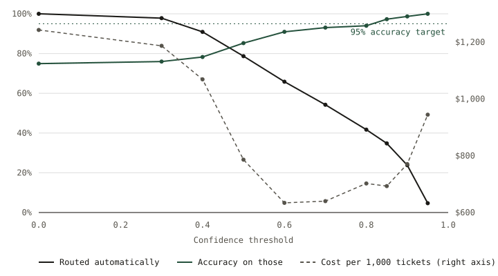

Demo · ticket-routing-eval
Ticket routing threshold eval
A small harness for one decision: which product team should own an incoming support ticket, and how sure does the model have to be before it routes the ticket without a person looking at it.
It takes a model's answers in the shape of a System One choice answer, as documented in OpenRouter's System One API reference (a choice, a confidence, and the probability of every option), then shows, at each confidence threshold, how many tickets would be routed automatically, how accurate those routes are, and what 1,000 tickets cost in triage time, misroutes, and model spend.
Data is 1,062 public PostHog GitHub issues standing in for support tickets, so the numbers show the method, not PostHog's real routing accuracy. Everything on this page is the committed output of the code in the repository.
What the baseline shows
The baseline is a cheap bag-of-words classifier with isotonic calibration. It is a floor to beat, not a proposal.
| Threshold | Routed automatically | Accuracy on those | Cost per 1,000 tickets |
|---|---|---|---|
| none (route everything) | 100% | 74.9% (239 of 319) | $1,243 |
| 0.70, picked on older issues | 54% | 93.1% (161 of 173) | $640 |
| 0.85, best in hindsight | 35% | 97.3% (108 of 111) | $693 |
| all by hand | 0% | n/a | $991 |
Three things come out of it. 1. With these cost assumptions, routing everything is worse than routing nothing for a model that is right 75% of the time. Break-even for routing everything is about 80% accuracy, because a misroute costs five times a manual triage. 2. The threshold picked on older issues (0.70) misses a 95% bar on newer ones (93.1%, bootstrap 95% range 89% to 97%), while 0.85 would have cleared it. The validation pick cleared 95% by one ticket (82 of 86), and overall accuracy fell from 85% on the validation slice to 75% on the test set as the team mix shifted, so part of the gap is noise and part is drift; both are why a pilot re-checks the threshold every week on the latest routes. 3. Confidence has to mean something for any of this to work. The calibration table in the report checks that tickets the model is 90% sure of are right about 90% of the time; the baseline's expected calibration error is 0.061.
Caveats. The test set is 319 issues, so every number has a wide range. 68 of the 108 correct routes at 0.85 are feature-flags issues, and the baseline is weaker outside that team. Isotonic calibration fitted on 743 issues is fragile (sigmoid calibration gives a very different curve), which is one more reason to prefer a model whose confidence is calibrated by design and to check it on the customer's own tickets.
Accuracy versus share routed

Full report
Train: 743 older tickets. Test: 319 tickets from 2026-07-01 to 2026-11-17, 10 teams. Routing every ticket by hand costs $991 per 1,000 tickets (2.0 min each at $29.74/hr). Model cost at $0.042 per million input tokens: $0.014 per 1,000 tickets.
Accuracy and cost by confidence threshold
| Threshold | Routed automatically | Accuracy on those | Misroutes per 1,000 | Sent to a person per 1,000 | Cost per 1,000 | Saving vs all manual |
|---|---|---|---|---|---|---|
| 0.00 | 100% | 74.9% (239 of 319) | 251 | 0 | $1,243 | $-252 |
| 0.30 | 98% | 76.0% (237 of 312) | 235 | 22 | $1,187 | $-196 |
| 0.40 | 91% | 78.3% (227 of 290) | 197 | 91 | $1,069 | $-78 |
| 0.50 | 79% | 85.3% (214 of 251) | 116 | 213 | $786 | $205 |
| 0.60 | 66% | 91.0% (191 of 210) | 60 | 342 | $634 | $357 |
| 0.70 | 54% | 93.1% (161 of 173) | 38 | 458 | $640 | $351 |
| 0.80 | 42% | 94.0% (125 of 133) | 25 | 583 | $702 | $289 |
| 0.85 | 35% | 97.3% (108 of 111) | 9 | 652 | $693 | $298 |
| 0.90 | 24% | 98.7% (75 of 76) | 3 | 762 | $771 | $221 |
| 0.95 | 5% | 100.0% (15 of 15) | 0 | 953 | $945 | $47 |
Each misroute is charged 10.0 minutes (the wrong team reads it, then it is moved and re-queued).
Threshold picked on the validation slice (149 older tickets): 0.70. On the test tickets it routes 54% automatically at 93.1% accuracy (161 of 173), which misses the 95% bar (bootstrap 95% range 89% to 97%), and saves $351 per 1,000 tickets.
In hindsight, the lowest threshold that clears the bar on the test tickets is 0.85 (35% routed at 97.3%, 108 of 111). The validation pick cleared the bar by a small margin on few tickets, and the team mix also shifted between older and newer tickets, so a threshold chosen once is not enough evidence; a pilot re-checks it every week on a few hundred routes.
Does confidence track accuracy?
Expected calibration error: 0.061 (0 means confidence equals accuracy in every bucket).
| Confidence bucket | Tickets | Mean confidence | Actual accuracy |
|---|---|---|---|
| 0.00-0.50 | 68 | 0.40 | 37% |
| 0.50-0.70 | 78 | 0.60 | 68% |
| 0.70-0.80 | 40 | 0.76 | 90% |
| 0.80-0.90 | 57 | 0.85 | 88% |
| 0.90-0.95 | 61 | 0.93 | 98% |
| 0.95-1.00 | 15 | 0.96 | 100% |
By month (drift check)
| Month | Tickets | Accuracy, all | Routed automatically | Accuracy, routed |
|---|---|---|---|---|
| 2026-07 | 33 | 70% | 19 | 100% |
| 2026-08 | 96 | 81% | 40 | 98% |
| 2026-09 | 80 | 74% | 49 | 84% |
| 2026-10 | 74 | 72% | 45 | 96% |
| 2026-11 | 36 | 72% | 20 | 95% |
Data
1,062 public GitHub issues from PostHog's main repository that carry exactly one team/* label, across 10 teams (product analytics, feature flags, experiments, data warehouse, web analytics, LLM analytics, session replay, error tracking, conversations, CDP). Each issue stands in for a support ticket, and its team label is the ground-truth owner. Title prefixes that name the product outright ("Feature flags: ...") are removed, along with links and images. GitHub search returns at most the 200 newest issues per team label, so large teams are capped and the team mix shifts between older and newer issues; treat the mix as a sample, not PostHog's real ticket volume.
The split is by date. The oldest 70% (743 issues, through June 2026) train the baseline, and the newest 30% (319 issues, July 1 to November 17, 2026) are the test set, so the test looks like next month's queue, including teams that grew after the training data was collected. The confidence threshold is picked on a validation slice (the newest 149 training issues) and only then applied to the test set, the way a pilot has to pick it before next month's tickets arrive.
These are GitHub issues, not PostHog's private support tickets, so the numbers show the method rather than PostHog's real routing accuracy. A pilot reruns the same script on the customer's own closed tickets.
Cost assumptions
| Input | Value | Source |
|---|---|---|
| Manual triage per ticket | 2 minutes | Assumption; timed on the customer's own queue in week 1 of a pilot |
| Cost of one misroute | 10 minutes | Assumption (wrong team reads it, moves it, re-queues it); measured from transfer logs in week 1 |
| Triage wage | $29.74/hr | BLS 2025 median for Computer User Support Specialists (O*NET 15-1232.00). Conservative for engineer-led support |
| Model input price | $0.042 per million tokens | TypeSafe's published Jev input price; output not metered |
| Accuracy bar | 95% | Assumption; set with the support lead at kickoff |
Run it yourself
pip install scikit-learn numpy matplotlib
python fetch_tickets.py # optional: re-pull issues with the GitHub CLI
python run_eval.py # baseline router -> reports/report.md, results.json, threshold_chart.png
python export_test_set.py # validation and test tickets as System One request bodies
python run_eval.py --val-answers val_answers.jsonl --answers test_answers.jsonl --out reports_jev
python run_eval.py --confidence top # threshold on the top probability instead of the confidence field
An answers file has one line per ticket:
{"id": 41234, "answer": {"type": "choice", "choice": "feature-flags", "confidence": 0.75, "probabilities": {"feature-flags": 0.84, ...}}}
Jev's confidence is reported separately from its top probability, so the harness thresholds on confidence by default and can sweep the top probability too. A {"type": "refusal"} answer, or an answer with neither a confidence nor probabilities, is always sent to a person.